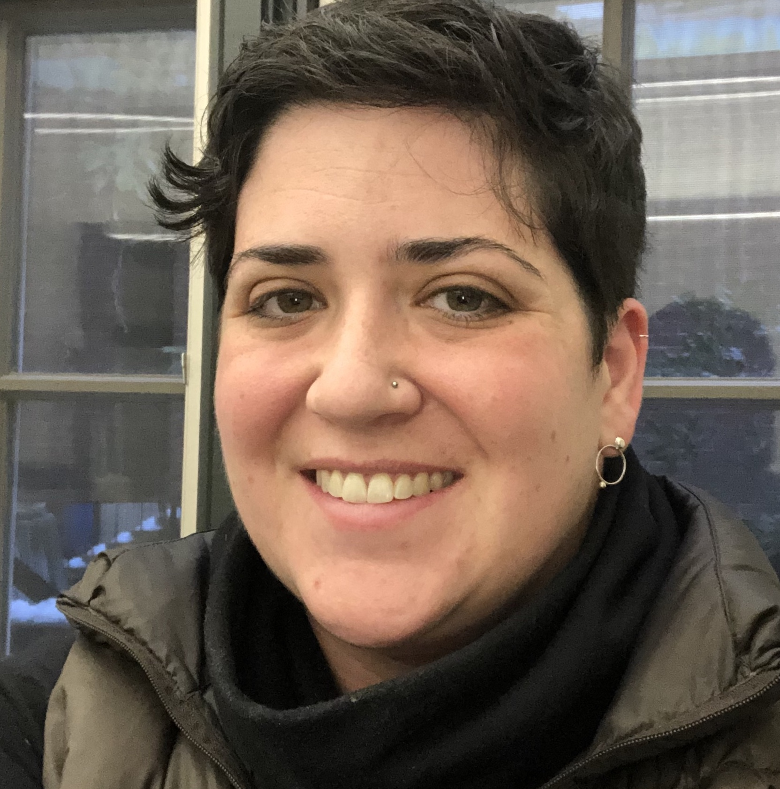

About
Unstoppable Studios is a maker space for making the world fit us and not the other way around.
Our collaborative creative workspace✳︎ supports makers of all experience and ability levels as they fearlessly imagine, prototype, create, and collaborate to make things together. By cultivating the relationships and skills to make what we need to thrive, we move together towards an empowered, inclusive, interconnected future.
You can read more about the vision that grounds our mission and our plans for the future here.
✳︎We’re still working on the workspace part. For now, we offer creative groups, therapy and coaching online and in a variety of community spaces.

Our Unstoppable Team
Miriam Zisook, founder and director

As a designer and social worker, I have spent the past decade working toward inclusion and empowerment of disabled and marginalized people. Across the projects I worked on as a designer and researcher, I was drawn to participatory design strategies that engaged the users and audiences of products in their design process. Inviting a wide range of humans—including engineers, doctors, patients, students, and teachers—into the design process was powerful and transforming.
At the same time, I was recovering from the perfectionism and grind of art school by rebuilding my own relationship with making and craft, and beginning a journey of healing my relationship with my body by making my own clothes. Through these explorations, I came to the idea that my design skills might be most powerful not for making things, but as tools to help people experience the same sense of agency and healing I was developing by making. I followed that instinct through the process of becoming a social worker and therapist.
As a social worker, I have provided mental health counseling, coaching and support groups in schools and outpatient mental health. As a therapist, I bring the designer's skills of problem definition, thoughtful standard setting, creativity and resourcefulness to the challenge of individual and collective wellbeing.
Unstoppable Studios was born out of a desire to further explore the intersections of design, craft, emotional wellbeing and relationships and to invite others into those explorations with me.
Advisory Board
Paige Kirstein Paige Kirstein works in philanthropy with a focus on advancement of low wage workers in California. She sits on the board of Corporate Accountability working towards a world that centers the needs of people over transnational corporations. She is passionate about the work of wealth and power redistribution and puts her passion into action through donor organizing to put wealth and power into the hands of people most impacted by inequality. Paige brings her vast knowledge and expertise in financial services, management, and philanthropy to serve as treasurer of Unstoppable’s board.
Sophia Zisook is a licensed social worker and the Director of Organizational Partnerships at Hello Alice, a free resource for small business owners providing direct grants, guides, and events all designed to support under-resourced entrepreneurs, predominantly women and entrepreneurs of color, launch and grow their businesses. Sophia is the founder and CEO of Negotiate with Sophia, dedicated to coaching Women, BIPOC, Queer people, nonprofit professionals, and others most disadvantaged by pay inequality to negotiate salary and benefits. Sophia uses her expertise in non-profit startup and leadership development to serve as secretary of Unstoppable's board.
Elizabeth Aeschlimann, M. Div is an experienced community organizer, educator, and chaplain. As a coach and facilitator, she helps people step off the productivity and exhaustion treadmill, design new professional and personal possibilities, and contribute to a just and sustainable future. Passionate about creating structures of support for people at the intersection of social justice and care work, Liz helps the Unstoppable Board work together towards our vision.
Dr. Natalie Russ is a psychologist and psychotherapist in private practice. In addition to general practice, she has particular expertise in addressing issues of power and harm within therapy. Natalie uses her clinical experience and knowledge to advise Unstoppable on matters of clinical and ethical concern.

Widget is Unstoppable's chief demonstrator of autonomic nervous system arousal. She also provides opportunities to practice unconditional positive regard, models the challenges of setting and responding to interpersonal boundaries, and facilitates fantastic games of hide and seek (as long as she's the one hiding).